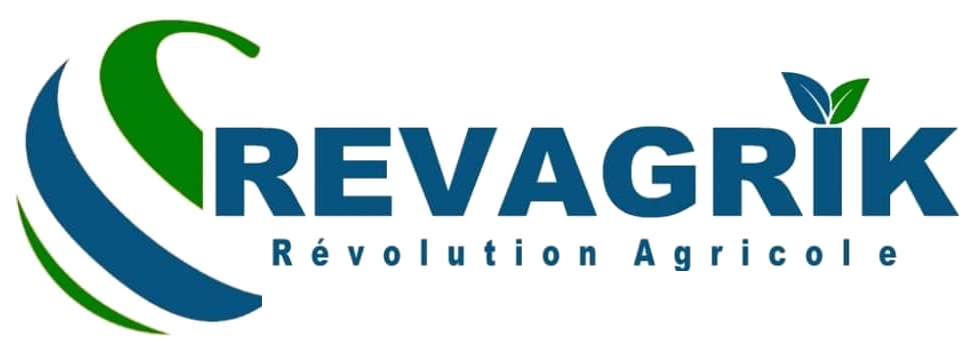

Vous êtes hors connexion
Votre connexion Internet semble interrompue. Les données enregistrées sur votre appareil restent protégées.
Dès que le réseau sera rétabli, vos synchronisations avec Supabase reprendront automatiquement.
REVAGRIK • Révolution Agricole • Burkina Faso